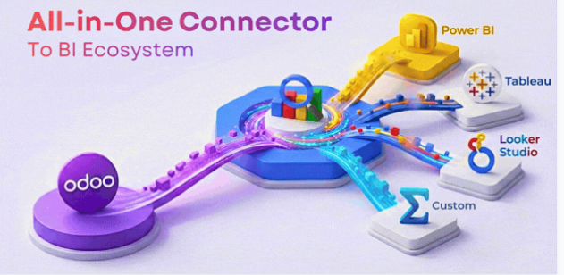

Native Ecosystem Support
Unlock your Odoo data for Power BI, Tableau, and Looker Studio. Push full tables to Google BigQuery with a single click—no technical expertise required.

Native Ecosystem Support
The core of our Standard edition. Select any Odoo model (Sales, Inventory, Accounting) and trigger a full table push. Our wizard simplifies the complex transfer into a single action.

No coding required. Simply upload your Google Service Account JSON key into Odoo. Our connector validates your credentials instantly, establishing a secure tunnel to your BigQuery project.

We bridge the gap between Odoo and SQL. Our engine automatically translates Odoo Many2one, Date, and Float fields into clean BigQuery Data Types (STRING, TIMESTAMP, FLOAT).

See your data live. Your Odoo records are perfectly serialized into BigQuery rows. Connect your BI dashboard to these tables and start generating insights instantly.

The Niyulabs Standard Connector is a powerful, high-speed Full Table Export engine. It is designed for snapshot reporting and essential BI stacks.